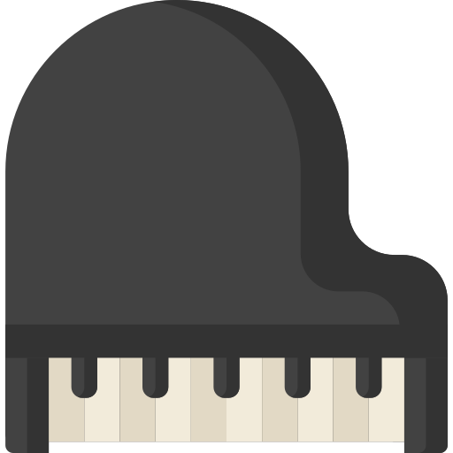

Hobby-uri și pasiuni
Ce îmi place să fac
La fel ca mulți alți copii de vârsta mea am o mulțime de pasiuni. Unele dintre ele le-am descoperit de când era mic, iar pe altele le-am căpătat de când am intrat la liceu. În continuare voi încerca să vi le prezint, pe scurt, pe cele mai importante dintre ele.
Chitara
Această pasiune o am din școala generală și a pornit în urma înscrierii într-o mică trupă, formată din câțiva colegi. A urmat apoi o perioadă în care mergeam constant la cursuri, sperând să fiu din ce în ce mai bun. Văzând că îmi place, părinții mi-au cumpărat, prin clasa a 7-a, o chitară clasică, pe care o folosesc și în ziua de azi. Momentan nu mai merg la cursuri deoarece liceul îmi ocupă mult timp, dar din când în când mai repet acasă sau cânt la mici evenimente.
Informatica
Este cea mai recentă pasiune a mea. Întrând la profilul de matematică-informatică intensiv și neștiind multe lucruri despre acest subiect, pot să spun că m-a atras relativ rapid. Deoarece îmi place să fiu la zi cu ultimele noutăți din tehnologie, vreau să știu cât mai multe despre ce se ascunde în spatele acestora.

Jocurile video
Cred că este unul dintre cele mai mari hobby-uri ale mele și tot odată cel mai vechi. Aproape oricine mă cunoaște știe că îmi petrec mult timp în fața calculatorului jucându-mă. Deși știu că acest lucru îmi ia mult din timp, tot continuu să îl fac deoarece îmi place foarte mult și mă liniștește .

Astronomia
Tot timpul m-am simțit atras de științele exacte, dar printre cele care mi-au plăcut cel mai mult se află astronomia. Tot timpul mi-am pus întrebări cu privire la ce se află înafara Pământului și mă uimește frumusețea întregului univers cu toate planetele, stelele, galaxiile și fenomenele sale inexplicabile.
Puzzle-urile
Aceasta este una dintre pasiunile pe care cred că o să le am toată viața. De mic îmi plăcea să rezolv puzzle-uri, oricât de grele ar fi fost ele sau sub ce formă. Momentan încerc să rezolv un puzzle de 3000 de piese, dar mai am mult de muncă până să îl termin.
Pianul
A fost o veche pasiune de a mea, dar pe care din păcate nu o mai practic din clasa a 2-a. Am luat cursuri la Clubul Copiilor Roman și la Școala de muzică din oraș, dar cred că din cauza vârstei fragede am renunțat, fără să mă gândesc la urmări, lucru pe care îl regret acum.
Desenul
Ăsta e mai mult un hobby decât o pasiune. Deși am luat lecții când eram mic, acum nu prea mai obișnuiesc să lucrez. Oricum, când e nevoie, mereu îmi face plăcere să desenez câte ceva, fie el doar în creion sau și în culori.

accesați pagina de contact sau vizitează-mă pe